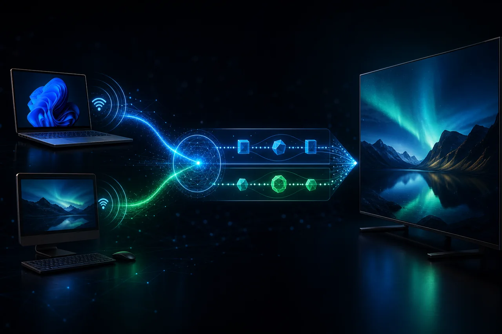

WIRELESS DISPLAY SESSION ENGINE
Miracast Connect Service

把“搜到设备”之后那段最容易失控的无线投屏链路，收敛成一套可观测、可恢复的跨平台连接服务：Linux 与 Windows 设备完成 P2P 建链后，服务继续驱动 RTSP / WFD 会话协商，并接入最终媒体数据流，让发现、连接、协商、播放不再像四个彼此不认识的系统。
不是一个“连接成功”的按钮，
而是一整条可观察的会话。
- ENGINEERING ROLE
- 网络协议工程 / 跨平台连接服务 / 媒体链路集成
- LINK LAYERS
- C++ / Linux / Windows / Wi-Fi Direct / P2P / RTSP / WFD / Media Pipeline
从发现设备，
到第一帧抵达。
每一个节点都有自己的进入条件、超时和清理路径。
跨平台扫描与设备能力归一化，输出稳定的候选设备模型
SOURCEWi-Fi Direct 角色协商、组网、地址解析与连接状态托管
NEGOTIATINGRTSP 请求序列、Transport 建立、会话保活与错误恢复
NEGOTIATING显示、编码与投屏能力交换，形成可执行的媒体会话配置
NEGOTIATING接入媒体数据流，向播放、转发、统计和调试模块提供统一数据面
NEGOTIATING页面化查看端到端阶段、日志、时序、协商字段与流健康状态
OBSERVE为什么“已经配对”仍然没有画面？
Miracast 的难点不在于让两个设备出现在同一张列表里，而在于把设备发现、Wi-Fi Direct 角色协商、P2P 组网、RTSP 控制面、WFD 能力交换与媒体流生命周期连成可重试的状态机。不同系统的网络栈、驱动时序和连接回调都可能让一次看似成功的配对在下一秒失去会话上下文。
把偶然成功，变成可以解释的状态迁移。
围绕连接生命周期设计统一 Session Engine：先抽象 Windows 与 Linux 的发现、连接和地址信息，再以显式状态机编排 P2P 建链、RTSP Transport 建立、WFD 参数交换及数据流接入。控制面逐步记录、媒体面独立观测；失败时按阶段回收资源并保留诊断上下文，让问题不再只能靠抓包“玄学复现”。
链路必须留下证据
- 01
Windows 与 Linux 双端设备发现、能力归一化与连接事件收敛
- 02
完成 Wi-Fi Direct / P2P 连接建链，维护角色、地址与会话生命周期
- 03
实现 RTSP 控制会话建立与 WFD 参数协商，贯通投屏协议后半程
- 04
接入协商完成后的媒体数据流，为渲染、转发与质量观测提供统一入口
- 05
以阶段化状态机覆盖发现、配对、协商、Streaming、重连与清理
- 06
连接页实时展示设备、会话阶段、协商结果、流状态与失败定位信息
后续演进 · 以下为路线图，具体阶段以项目说明为准。
先把跨平台投屏链路真正接通
- Linux / Windows 设备发现
- P2P 连接与会话状态管理
- RTSP / WFD 协商主链路
- 媒体数据流接入与基础播放验证
让连接服务从能连升级为可运营
- 断线重连与阶段化资源回收
- 协商参数与链路时序可视化
- 流健康、延迟与吞吐观测
- 多设备候选排序与兼容性诊断
不被平台差异冲散的原则
- 01
连接不是一个布尔值：每个阶段都必须可观测、可解释，也必须有明确的退出路径。
- 02
先管理控制面，再消费数据面：RTSP / WFD 协商未完成前，不把“有数据”误判为“会话可用”。
- 03
跨平台差异收敛在适配层，核心状态机只面对一致的设备与会话模型。
- 04
诊断信息是产品能力的一部分：让开发者看见卡在发现、P2P、协商还是媒体流，而非只看到连接失败。